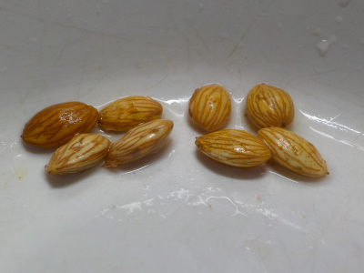
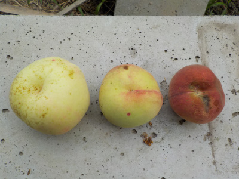
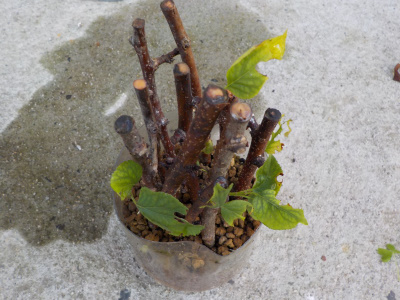
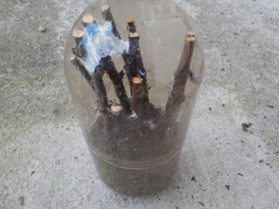
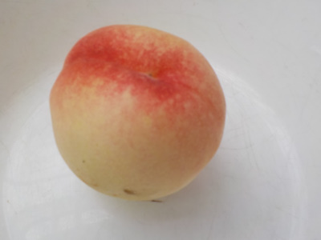
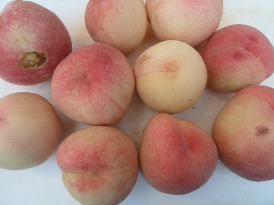
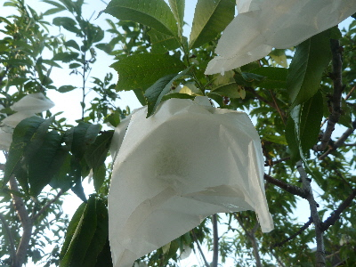
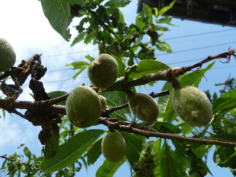
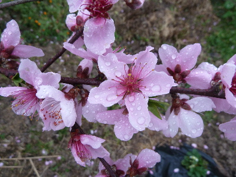

遊びで植物を育てよう
2020/07/25
桃の種を採りました。

桃の種の中身はこんな感じでした。
杏子に似ていますね。
殻はとても硬かったです。杏子より硬かった。
明日蒔こうと思っています。
【桃TOP】
【果物TOP】
【園芸TOP】
2020/07/18
桃を収獲しました。

白くて大きいのは袋をかけたもの。残り二つは袋を掛け忘れたものです。
みんな甘くなっていました。
なんとなく熟れるとピンクなイメージですが、白くても甘いんですね。
【桃TOP】
【果物TOP】
【園芸TOP】
2020/06/07
挿し木の桃に葉っぱがまだ残っています。

2月に挿し木をしているので、根っこがあるかもしれません。
近いうちに根っこがあるのかを確認しようと思います。
【桃TOP】
【果物TOP】
【園芸TOP】
2020/02/15
桃の挿し木をしました。

剪定した枝をペットボトルで挿し木しました。
前回は全滅でしたが、今回はどうかな？
【桃TOP】
【果物TOP】
【園芸TOP】
2019/07/14
桃が不作でしたが、美味しいのが採れました。
今年は桃が不作で3個しか袋かけしませんでした。

一つがピンク色になったので収穫して食べました。
美味しかったです。
美味しいの食べちゃうと、来年食べるためにちゃんと育てようって思いますね。
【桃TOP】
【果物TOP】
【園芸TOP】
2018/07/15
残った桃をまとめて収穫しました。
大きくて熟れた桃から収穫していたんですが、害虫が気になりだしたので残りを全部収穫しました。

桃には袋掛けをしていたんですが、だんだん袋の殺虫作用がなくなっているのかな？
ちょっと置いておいて、柔らかくなったら食べようと思います。
【桃TOP】
【果物TOP】
【園芸TOP】
2018/05/26
桃に袋をかけました。
桃の木をみたら、ゾウムシが大量にいました。
だいぶ被害にあってるみたい。

あわてて袋かけをしました。
次はもっと早い時期に袋かけをしようと思います。
【桃TOP】
【果物TOP】
【園芸TOP】
2016/05/15
桃の実が沢山付いてますけど。
今はいっぱいあるけど、何個残るかな？

収獲出来るまでなかなか育たないです。
たまには沢山食べたいなー。
【桃TOP】
【果物TOP】
【園芸TOP】
2016/04/03
桃の花が満開です。
桃の花は派手ですね。

色が濃いので、目立ちますね。
もうちょっと淡いと好きかな。
【桃TOP】
【果物TOP】
【園芸TOP】
2013/03/31
桃の花は綺麗ですね。
桃はちょっと花が大きくて見栄えがいいです。

柔らかそうな花びらがかわいいですね。
色も綺麗です。
これが沢山の実になると、なおいいですね。
【桃TOP】
【果物TOP】
【園芸TOP】
桃は美味しい。
【おいしいものを食べよう。】【しっかり寝よう。】
【ソロ活をしよう!】【季節感のあることをしよう。】【動画視聴はほどほどに。】【当サイトの全てのコンテンツは無断転載禁止です。】